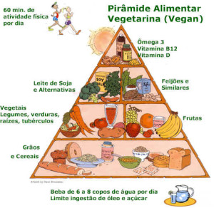

ESTE DOCUMENTO NÃO SUBSTITUI UM PROFISSIONAL DE NUTRIÇÃO
Guia para Iniciantes na Musculação
NUTRIÇÃO VEGANA

A alimentação é uma das partes mais importantes do treinamento, sem os nutrientes necessários o corpo não conseguirá reconstruir o tecido muscular danificado durante o treino, ou seja, você ficará sempre do mesmo jeito ou pior, perderá massa muscular. A melhor maneira de maximizar o ganho de massa muscular através da alimentação é comer muito, porém comer certo ou seja, apenas alimentos nutritivos, ricos em proteínas e bons carboidratos e em grandes quantidades.
Para facilitar a ingestão de nutrientes, faça cerca de 6 a 7 refeições por dia, uma refeição a cada 3 horas. Todas as refeições devem conter proteínas e carboidratos, mantendo o seu corpo abastecido com estes nutrientes, manterá o seu corpo em estado anabólico o dia inteiro(crescendo).
OS MACRO NUTRIENTES
- Proteínas
As proteínas, de uma maneira resumida, são os macronutrientes responsáveis pela reconstrução do tecido muscular. Você deve ingerir cerca de 2g de proteína por kilos do seu corpo(com base em experiencias próprias e opiniões de colegas fisiculturistas). Ex: Uma pessoa de 60kg deve ingerir no mínimo 120g de proteína por dia para maximizar o ganho de massa muscular.
Exemplo de alimentos ricos em proteínas: Proteína texturizada de soja, Feijão preto, Grão de bico, Lentilhas, Castanhas diversas…
- Carboidratos
Os carboidratos são responsáveis por garantir energia para o corpo, mas o corpo humano pode transformar outros nutrientes, como proteínas e gorduras em energia, por isso devemos ingerir carboidratos junto com a proteína, justamente para o corpo usar o carboidrato como fonte de energia e a proteína para o seu real papel, que é a reconstrução muscular.
Exemplo de alimentos ricos em carboidratos saudáveis: Batata Doce, Vegetais, Pão Integral e vários outros alimentos integrais.
Exemplo de alimentos ricos em carboidratos ruins: Pizza, Doces, Biscoitos e qualquer outro alimento rico em açúcares
- Gordura
Nem toda gordura é sua inimiga, você precisa apenas evitar as gorduras ruims(saturadas) e ingerir de forma moderada as gorduras boas. A ingestão de gorduras boas, pode ajudar no funcionamento do corpo humano e na liberação de importantes hormônios anabólicos como a testosterona e o hormônio do crescimento.
Exemplos de alimentos ricos em gorduras boas: Castanhas, Nozes, Oléos virgens
Exemplo de alimentos ricos em gorduras ruins: Frituras de qualquer tipo, Fast-Food…
BEBA ÁGUA!
Pelo menos 75% dos nossos músculos são formados por água, o que transforma a ingestão de líquidos muito importante ao longo do dia, você deve beber no MÍNIMO dois litros de água por dia, a água além de ajudar no bom funcionamento do corpo humano, ajuda na hidratação das células musculares, além de ajudar a eliminar os resíduos tóxicos do corpo.
SUPLEMENTAÇÃO
As vezes pode parecer difícil se alimentar 6 vezes ao dia ou alcançar a quantidade de proteína pretendida ao longo do dia, até porque nem todos tem tempo para isto. Os suplementos servem justamente para isto, um shake com pó proteico, farinha de aveia e leite vegetal pode substituir uma refeição no dia e te ajudar a bater a meta de ingestão proteíca, mas comida é comida, não é recomendável substituir mais de 3 refeições por dia, então se você for suplementar, você terá que fazer no mínimo 3 refeições sólidas de verdade ou seguir as recomendações do seu médico ou nutricionista.
Exemplo de Shake:
– 2 Colheres de Proteina Vegetal(Proteina isolada de soja, arroz, ervilha, etc)
– 2 Colheres de Farinha de Aveia
– 400ml de leite vegetal(leite de soja, de aveia, de arroz, de nozes, etc)
– Adoçante
Suplementação pós treino básica:
Suplementação pós treino é basicamente a unica suplementação que um praticante de qualquer atividade fisica necessita, os demais suplementos no mercado são tidos como acessórios, visto que suas importancias não são tão fundamentais como o pós treino.A importancia do pós treino se dá na necessidade de um reposição rápida e consequentemente quebra do estado catabólico iniciado junto com o treino, é uma refeição que visa repor rapidamente os macro nutrientes básicos(proteína e carboidrato) para acelerar a recuperação muscular.Um shake básico para o pós treino é composto apenas de proteina isolada e maltodrextrina ou dextrose na proporção de 1:1 batidos apenas em água,
A dose comum ultizada é 01 scoop, que contém em média 30gr.
Isto será suficiente para um iniciante em atividades fisicas repor o que é necessário após o treino, cerca de 1hr após o shake pós treino o praticante pode voltar a sua rotina alimentar normalmente.
Paulo Victor Pinheiro – Paru